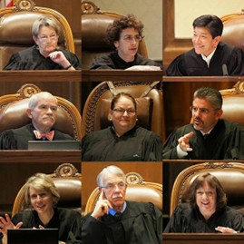

By Aanya Bhaskarabhatta | March 2026

A photo of the judges of the Washington State Supreme Court.
Every year, Washington State receives individuals from both within the United States and internationally. Immigrants make up about 17% of the total population, which translates to nearly 1.4 million people. They also make up about 26% of parents of children that attend school in Washington. When moving to a new place, a major factor for families with children or who plan to have children is the quality of education available. Washington is known for having robust, high-performing districts, such as Lake Washington School District, Bellevue School District, and Northshore School District.
Behind any successful school district is adequate funding. To understand this, it’s necessary to examine the Washington State Constitution, a document similar to the Constitution of the United States, but specific to the state’s priorities and goals. In this document, Article IX states that “it is the paramount duty of the state to make ample provision for the education of all children.” In other words, the state must ensure that schools have enough resources—such as funding, facilities, and materials—to meet educational standards. The use of the word “ample” suggests that the state must go beyond providing only the bare minimum.
The legal context of Article IX was central to the landmark case McCleary v. State of Washington, often referred to as the McCleary Decision.
For decades, school districts faced ongoing funding issues due to an overreliance on local levies—temporary property taxes that required voter approval—making funding inconsistent. Although both courts and lawmakers attempted to address these issues, many districts continued to struggle despite additional resources. In 2007, Matthew and Stephanie McCleary, along with other parents, sued the State of Washington for failing to adequately fund public education.
The case was initially heard in the King County Superior Court, which ruled in favor of the plaintiffs. The case was then appealed to the Washington Supreme Court (not to be confused with the Supreme Court of the United States).
In McCleary v. State of Washington, the Washington Supreme Court ruled on January 5, 2012, that the state was not meeting its constitutional duty to fully and consistently fund public education. This decision led to billions of dollars in increased funding for K–12 schools and significant legislative reforms, making it one of the most important education cases in Washington State’s history.
FWD.us. www.fwd.us/wp-content/uploads/2025/06/2025-Washington-Fact-Sheet-.pdf. Accessed 15 Mar. 2026.
"McCleary, et al. v. State of Washington." wa.gov, www.courts.wa.gov/appellate_trial_courts/SupremeCourt/?fa=supremecourt.McCleary_Education. Accessed 15 Mar. 2026.
"McCleary v. Washington." Justia, law.justia.com/cases/washington/supreme-court/2012/84362-7-0.html. Accessed 15 Mar. 2026.
"Washington state's immigrant population: 2010-21." Office of Financial Management, wa.gov, 2023, ofm.wa.gov/wp-content/uploads/sites/default/files/public/dataresearch/researchbriefs/brief110.pdf. Accessed 15 Mar. 2026.
"Washington State Constitution." wa.gov, leg.wa.gov/state-laws-and-rules/washington-state-constitution/. Accessed 15 Mar. 2026.